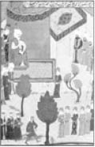

Yavuz Sultan Selim
Yavuz Sultan Selim (1470-1520)
Dokuzuncu Osmanlı padişahıdır. Kendisinden öncekilere göre en az iktidarda kalan padişah olmasına rağmen (1512-1520), tarihçilerin deyimiyle, sekiz yıla seksen yıllık iş sığdırmayı başarmıştır.
Çaldıran (1514), Mercidabık (1516) ve Ridaniye (1517) gibi önemli savaşlar kazanmış, tahta çıktığında 2.375.000 kilometrekare olan Osmanlı topraklarını sekiz yılda 6.557.000 kilometrekareye çıkarmıştır. Hilafeti Abbasiler’den alarak, Osmanlı padişahlarının aynı zamanda Müslümanların dini ve siyasi lideri olmasını sağlamış ve Hz. Muhammed’in hırkası, dişi, sancağı ve kılıcını içeren Mukaddes Emanetleri Hicaz’dan İstanbul’a getirtmiştir.

Yavuz Sultan Selim yapacağı seferleri hep gizli tutardı. Yine böyle bir sefer hazırlığı sırasında vezirlerinden biri ısrarla seferin nereye yapılacağını sorunca Padişah şöyle der:
“Sen sır saklamasını bilir misin?”
Vezir beklediği cevabın ümidiyle, “Evet hünkarım, bilirim” dediğinde Yavuz şu cevabı verir:
“Ben de bilirim... “
Yavuz Sultan Selim gösterişten hoşlanmazdı. Ağaç tabaklarda her öğün tek çeşit yemek yerdi. Bir gün yabancı bir elçiyi kabul edecek olan Padişah’a vezirleri gösterişli bir kıyafet giymesini önerdiler. Fakat Yavuz Sultan Selim her zaman olduğu gibi sade bir kıyafeti tercih etmişti. Yalnız tahtının yanına da büyük bir kılıç koydurmuştu. Elçi görüşmesini bitirip dışarı çıktığında vezirler, Padişah’ın daha önce emrettiği şu soruyu sorarlar:
“Padişahımızı nasıl buldunuz?”
Elçi bir yandan alnındaki teri silerken soruyu yanıtlar:
“Tahtın yanındaki kılıca bakmaktan padişahınıza bakamadım ki...”
Babası II. Bayezid’den devraldığı hazinenin durumu hiç de iyi değildi. Yaptığı seferler sayesinde hazineyi ağzına kadar doldurup kapısını mühürlettikten sonra şöyle bir vasiyette bulunur:
“Benim altınla doldurduğum hazineyi, torunlarımdan her kim doldurabilirse kendi mührü ile mühürlesin, aksi hâlde Hazine-i Hümayun benim mührümle mühürlensin.”
Bu vasiyet sonrasında Osmanlı İmparatorluğu boyunca hazine hep Yavuz Sultan Selim’in mührüyle mühürlendi. Çünkü ondan sonra hiçbir padişah hazineyi ağzına kadar dolduramadı.
Yavuz Sultan Selim, Mısır seferinden dönerken, Konya civarında konakladıklarında müthiş bir fırtınayla birlikte hortum çıkar. Toz, toprak döne döne göğe yükselir. Bu manzara karşısında Padişah yanındaki âlim Kemal Paşazâde’ye sorar:
“Hocam bu nedir böyle?”
Âlim olduğu kadar sohbeti de hoş olan Kemal Paşazâde şöyle cevap verir:
“Efendim burası Mevlâna’nın şehri olduğundan her şey buna uygun hareket eder. Taşı toprağı dahi bunu içine sindirip işte böyle durmadan dönerler.”
Yavuz Sultan Selim kendi tarzında bir kavuk giyerdi ve bu onun adıyla anılırdı. Sezgileri oldukça kuvvetli ve ileri görüşlü olan Padişah, yine bir gün odasında bunu giydikten sonra aynaya bakarak şöyle der:
“Demek dünyaya sığmayan kafa bir kavuğa sığabiliyormuş!”